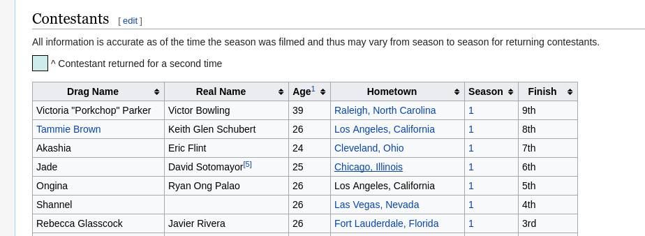

Extraindo HTML¶
Esse exemplo visa mostrar a possibilidade de extrair o HTML do site que quer obter o conteúdo e manipular o DOM fictício para poder obter os dados em específico. Iremos criar uma extensão que gera alertas contendo os nomes de todos os participantes do programa de TV americando RuPaul's Drag Race.
Estaremos usando o seguinte site como base: https://en.wikipedia.org/wiki/List_of_RuPaul%27s_Drag_Race_contestants
O conteúdo que queremos encontra-se em uma tabela no site:

É necessário conhecer o básico de seletores do DOM. Se você sabe CSS, você provavelmente tem o conhecimento necessário para selecionar os elementos estáticos.
A tabela que queremos possui uma classe .sortable. Nós queremos pegar, do corpo da tabela cada linha e, de cada linha, o primeiro elemento. Então,
podemos montar nosso seletor como .sortable tbody tr > td:nth-child(1).
Se você abrir seu console e digitar document.querySelectorAll('.sortable tbody tr > td:nth-child(1)'), verá que recebemos uma lista de nodos HTML com as informações que queremos!
A requisição para obter HTML é igual à requisição para obter JSON. Podemos usar a Superagent para isso, e também vamos usar uma outra dependência. Adicione o jsdom ao projeto. Usaremos ele para criar o DOM virtual!
1 2 3 4 5 6 7 | import Bluebird from 'bluebird'; import agent from 'superagent'; import promisifyAgent from 'superagent-promise'; import { JSDOM } from 'jsdom'; const request = promisifyAgent(agent, Bluebird); const website = 'https://en.wikipedia.org/wiki/List_of_RuPaul%27s_Drag_Race_contestants'; |
NodeList. Existe uma
maneira de contornar isso para trabalhar com os elementos, que é converter a
lista de nodos para um array nativo. Podemos definir a seguinte função, baseado
neste link:
1 2 3 | function nodeListToArray(dom) { return Array.prototype.slice.call(dom, 0); } |
Agora, dentro da função principal assíncrona, precisamos extrair os dados.
Uma informação importante é que alguns dos itens da lista que precisamos
encontram-se no formato <a href="#">Queen</a> e outros no formato Queen.
1 2 3 4 5 6 7 8 9 10 11 12 13 14 15 16 | function main(context, done) { // Obter todo o HTML do site em modo texto request.get(website).then(({ text }) => { // Virtualizar o DOM do texto const { window } = new JSDOM(text); // Converter os dados da tabela para uma lista e remover os links const queens = nodeListToArray(window.document.querySelectorAll('.sortable tbody tr > td:nth-child(1)')) .map(queen => { const link = queen.querySelector('a'); return link === null ? queen.innerHTML : link.innerHTML; }); // Agora, com `queens` contendo a lista que queremos, podemos gerar os alertas done({ alerts: queens }); }); } |